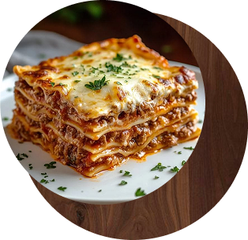
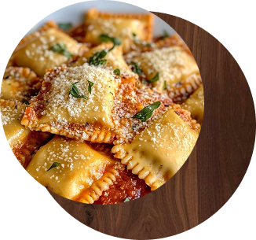
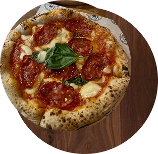
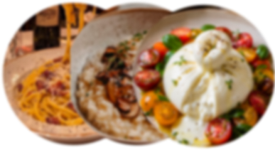
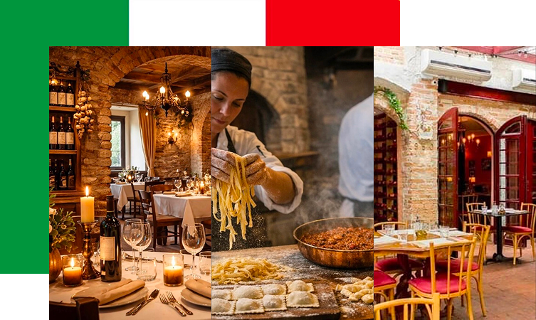

Nosso Cardápio

Lasanha abolonhesa
R$45,90

Ravioli de queijo
R$42,90

Pizza marguerita
R$54,90

Ver mais
La noestra storia
Tradição italiana feita à mão
No Fatto a Mano, a paixão pela culinária
italiana ganha vida em cada prato.
Nossas receitas valorizam
preparar
artesanal, ingredientes selecionados e
sabores que celebram a tradição italiana
ponto cada
detalhe é pensado com
carinho para proporcionar uma
experiência única ,cheia de sabor
aconchego e
momentos especiais

Horários
Segunda feira: Fechado
Terça a sexta-feira: Das 18h às 23h
Sábado e domingo: Das 12h às 23h